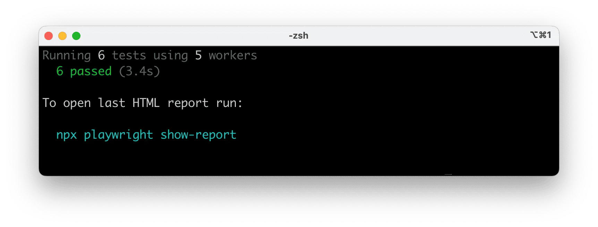
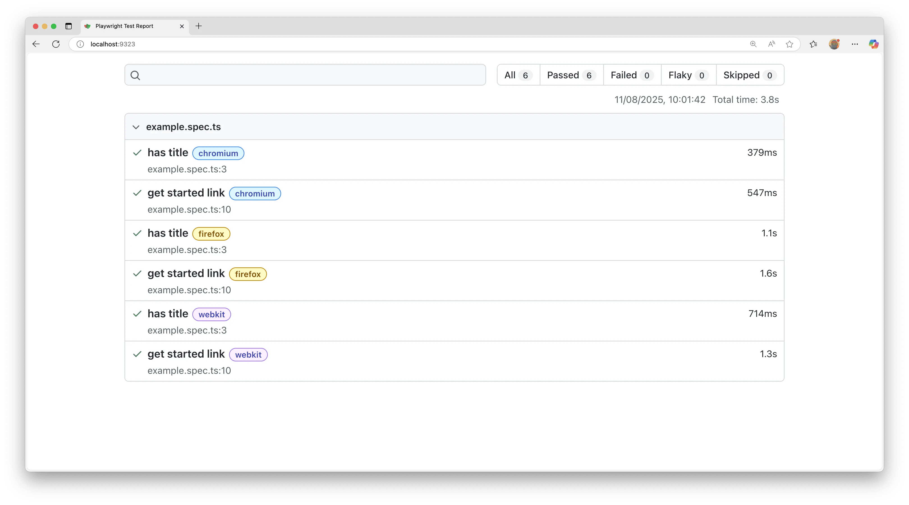
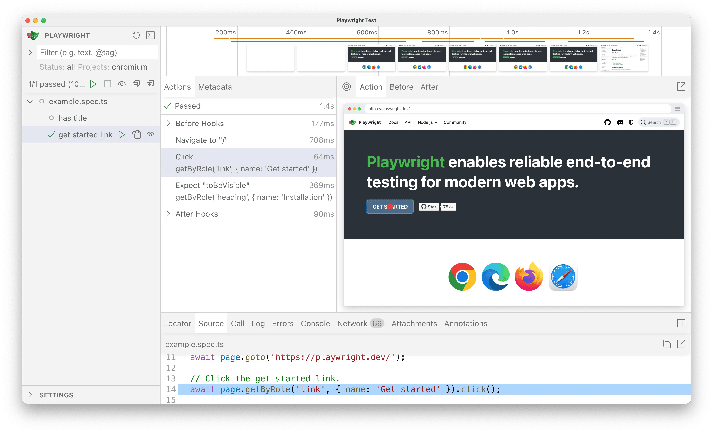

Installation
Introduction
Playwright Test is an end-to-end test framework for modern web apps. It bundles test runner, assertions, isolation, parallelization and rich tooling. Playwright supports Chromium, WebKit and Firefox on Windows, Linux and macOS, locally or in CI, headless or headed, with native mobile emulation for Chrome (Android) and Mobile Safari.
You will learn
- How to install Playwright
- What's installed
- How to run the example test
- How to open the HTML test report
Installing Playwright
Get started by installing Playwright using one of the following methods.
Using npm, yarn or pnpm
The command below either initializes a new project or adds Playwright to an existing one.
- npm
- yarn
- pnpm
npm init playwright@latest
yarn create playwright
pnpm create playwright
When prompted, choose / confirm:
- TypeScript or JavaScript (default: TypeScript)
- Tests folder name (default:
tests, ore2eiftestsalready exists) - Add a GitHub Actions workflow (recommended for CI)
- Install Playwright browsers (default: yes)
You can re-run the command later; it does not overwrite existing tests.
Using the VS Code Extension
You can also create and run tests with the VS Code Extension.
What's Installed
Playwright downloads required browser binaries and creates the scaffold below.
playwright.config.ts # Test configuration
package.json
package-lock.json # Or yarn.lock / pnpm-lock.yaml
tests/
example.spec.ts # Minimal example test
The playwright.config centralizes configuration: target browsers, timeouts, retries, projects, reporters and more. In existing projects dependencies are added to your current package.json.
tests/ contains a minimal starter test.
Running the Example Test
By default tests run headless in parallel across Chromium, Firefox and WebKit (configurable in playwright.config). Output and aggregated results display in the terminal.
- npm
- yarn
- pnpm
npx playwright test
yarn playwright test
pnpm exec playwright test

Tips:
- See the browser window: add
--headed. - Run a single project/browser:
--project=chromium. - Run one file:
npx playwright test tests/example.spec.ts. - Open testing UI:
--ui.
See Running Tests for details on filtering, headed mode, sharding and retries.
HTML Test Reports
After a test run, the HTML Reporter provides a dashboard filterable by the browser, passed, failed, skipped, flaky and more. Click a test to inspect errors, attachments and steps. It auto-opens only when failures occur; open manually with the command below.
- npm
- yarn
- pnpm
npx playwright show-report
yarn playwright show-report
pnpm exec playwright show-report

Running the Example Test in UI Mode
Run tests with UI Mode for watch mode, live step view, time travel debugging and more.
- npm
- yarn
- pnpm
npx playwright test --ui
yarn playwright test --ui
pnpm exec playwright test --ui

See the detailed guide on UI Mode for watch filters, step details and trace integration.
Updating Playwright
Update Playwright and download new browser binaries and their dependencies:
- npm
- yarn
- pnpm
npm install -D @playwright/test@latest
npx playwright install --with-deps
yarn add --dev @playwright/test@latest
yarn playwright install --with-deps
pnpm install --save-dev @playwright/test@latest
pnpm exec playwright install --with-deps
Check your installed version:
- npm
- yarn
- pnpm
npx playwright --version
yarn playwright --version
pnpm exec playwright --version
System requirements
- Node.js: latest 20.x, 22.x or 24.x.
- Windows 11+, Windows Server 2019+ or Windows Subsystem for Linux (WSL).
- macOS 14 (Ventura) or later.
- Debian 12 / 13, Ubuntu 22.04 / 24.04 (x86-64 or arm64).